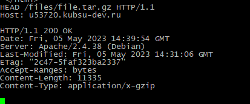
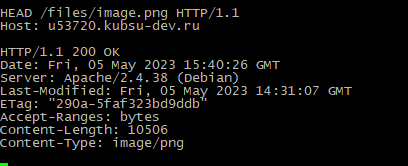
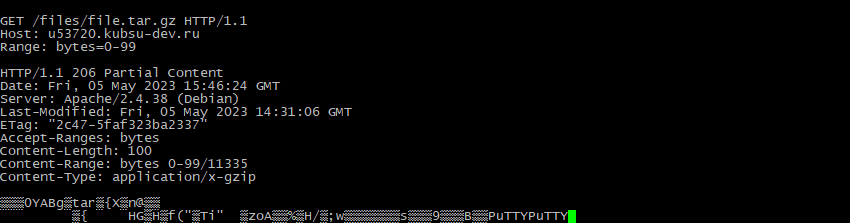
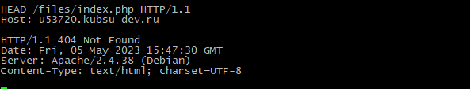

Заливаем файлы в каталоге files на веб-сервер через GIT. Проверяем загрузку
файлов в браузере из учебного домена. С помощью программы telnet будем отправлять HTTP-запросы к
веб-серверу.
Метод GET запрашивает представление ресурса. Запросы с использованием этого метода могут только извлекать данные. Получаем главную страницу сервера методом GET в протоколе HTTP 1.0
Получаем внутреннюю страницу методом GET в протоколе HTTP 1.1.
Определяем размер файла file.tar.gz, не скачивая его. Эту информацию можно увидеть в строчке Content-Length, а именно 11335 байт.
Определяем медиатип ресурса /image.png. В строке Content-Type указано изображение в формате png.
Отправляем комментарий на сервер по адресу /index.php.
Получить первые 100 байт файла /file.tar.gz.
Определяем кодировку ресурса /index.php. Это кодировка типа utf-8 в строке Content-Type.
